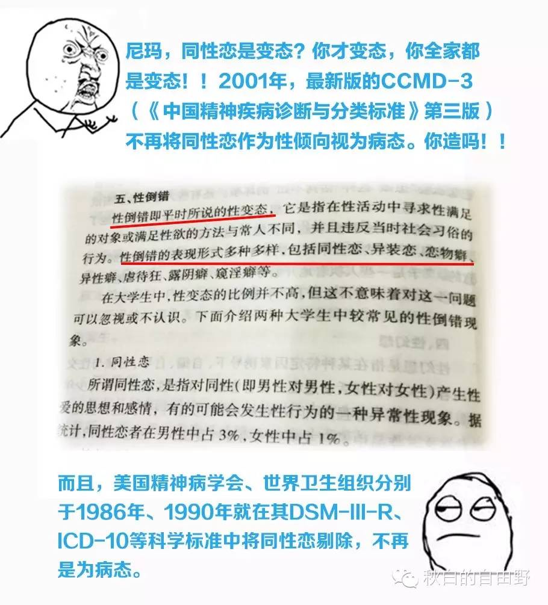

秋白女友：行动起来，让教育部看见“同志”！
（图中文字：教育部，你的“毒”教材到啦）
这个，我先自我介绍下，我叫Janeway。那个起诉教育部的女生秋白的女朋友。对，我是在她起诉教育部后爱上她的！她起诉教育部以来，受到那么多压力却还在坚持着。现在，我也是时候站出来了。
什么？你不知道发生了什么？只要百度“秋白/教科书/教育部”这些词，你就可以见到我迷恋的女朋友照片啦~~（此处省去安利文八万字....）
40%教材仍认定同性恋为病，50%以上教材谈同性恋治疗。是不是不可思议？我的女友“秋白”就是被这种教科书所伤害。她先后积极向学校反映，不被理睬，向教育厅反映，被推托，向出版社反映，遭狡辩，向广州天河法院提起诉讼，被剥夺诉讼权....
幸好，她够倔强，直接起诉了教育部行政不作为。这是我最爱她的一点。尽管后来她遭遇学校、家庭各种压力，好在社会各界都是支持她的。当然，还有我一直在她身边。父母也慢慢变得更理解我们的行为。就是爱，没为什么。
那现在她和教育部的“纠缠”怎么样了呢？24日（周二），她在北京第一中院见到了教育部两位代表。庆幸的是，她告诉我这一次算是一次开放的对话。遗憾的是，她发现教育部一问三不知。当被问及教材出错如何纠正时？教育部说没收到过任何“毒教材”举报，纠错机制没启动过。
WTH！！真的没人举报过吗？自2001年中国CCMD-3将同性恋剔除不再视为病已过去14年之久。“毒教材”被沿用至今，不就是我们一次次地坐视不理么？难道和我们一次次放弃“举报权”没关系？
那么，现在还来得及。教育部已承诺将会进一步跟进和研究此事，并给秋白进一步回复。只有接到各种举报，教育部才会启动错误教材纠正机制。所以，从我开始，呼吁一人一书，向教育部举报“毒教材”！让教育部看到歧视同性恋的“毒教材”泛滥之严重，启动纠错机制！
源源不断地举报，才能让教育部看到现实。这是态度，也是对于秋白的支持。秋白会更坚定地继续走下去，现在，该是我们站出来了！
愿意与秋白同行的“女友们”！
一人一书，寄向教育部！
我们陪她一起走性/别平权之路。
你的支持，会是她的力量。
我们一起，撑秋白，让教育部看见同志！
2015.12.17.秋白女友.于广州。
“女友们”的参与方式：
1、找到一本“毒教材”：您可通过图书馆查阅和复印、购买、借用等方式找到身边的恐同毒教材，将错误页内容标注并折角出来。当然，你也可以在旁边写上正确的内容及任何吐槽！让我们来教教ta们认识同志。（毒教材名单详见文末附件清单。只要在书店、图书馆等随便翻阅大陆出版的变态心理学、医学、心理健康教育类书籍，一抓一大把！）
比如这样子在书里标注（吐槽）：

（《大学生心理健康与调适》 吕秋芳齐力编著 北京华文出版.2002）
 《变态心理学新论》 邵华 吕晓峰 编著 黑龙江教育出版社.2010
《变态心理学新论》 邵华 吕晓峰 编著 黑龙江教育出版社.2010
《变态心理学导论》，刘新民、谈成文主编，合肥工业大学出版社，2011
懒得去找书的，直接保存并打印这几张吐槽文的照片就好~\(≧▽≦)/~啦啦啦
2、后文附件有举报信模板，填写完整后连同错误教材或吐槽文打印件一起寄至教育部。
模板和地址都在，请拿走不谢。
如果你愿意，可在举报信里面写写你为什么要举报错误教材，你的生命故事等等。
举报信及错误教材请寄至：北京市西城区大木仓胡同37号，教育部统一监督举报受理中心（收）
3、让大家看到你的勇敢，欢迎加入“秋白女友团”。
将邮寄的举报信和毒教材拍照，可以是拍举报信、毒教材，也可以是你和举报信的合影。
然后通过微博和朋友圈发布，发布在微博上可@我的微博：JanewayAndQiu 或者秋白的微博@Qamily_Jonnie
当然，你看还可扫描一下二维码加入女友团群聊（只加举报或想举报的小伙伴哦）。
附：举报信模板
尊敬的教育部长、教育部官员：
您好！我是一名普通的大学生（可自由修改），想向贵部门举报教科书出现污名同性恋及错误内容的情况。
我发现高校教科书里描述同性恋为性指向障碍，性倒错等（举出你发现的书中例子，比如：广东高等教育出版社出版的《心理健康教程》（2003年版，张小远，解亚宁主编）在第一节第三章“常见精神疾病及其处理”中有这么一段描述“性心理障碍类型有：同性恋、恋童癖、恋物癖、异装癖、露阴癖、窥阴癖等”，书中直接将同性恋归为性心理障碍。即使在2008年更新出版的《心理健康教程》，也并未对此内容做出更改。随后查阅了高校各学院的课程目标等资料，涉及同性恋内容较多的是《变态心理学》和《心理健康教程》这两类书，因此我特意翻阅了校园内的《变态心理学》（包括课堂用书和图书馆藏书），错误内容也是惨不忍睹。同样是广东教育出版社出版的《变态心理学》（2011年版，王玲主编）一书中，赫然将同性恋和双性恋归为性指向障碍，并且称同性恋”这类患者多见于未婚青少年，是性心理障碍中最多见的类型”，称双性恋“这类患者既可以异性又可以同性作为性活动对象”。）
而早在1990年，世界卫生组织正式将“同性恋”从精神疾病的名单中删除。1986年，美国精神病学会推出的《诊断与统计手册》（ The Diagnostic and Statistical Manual of MentalDisorders ）第3版修正版，简称DSM-III-R。该手册中，删除了“自我失谐型同性恋”。而此前该学会分别于1973年和1978年两次已就手册中有关同性恋的内容进行讨论和修订。而在国内，2001年中华精神科学会发布的《中国精神障碍分类与诊断标准第3版》（简称CCMD－3(Chinese Classification of Mental Disorders))已经将同性恋去病化。14年过去了，中国仍有很多专业课教科书将同性恋视为病态，连2001年的国家科学标准都达不到。
这些教材不仅污名性少数群体，还直接伤害性少数学生，我特意向贵部门举报。希望贵部门能够：1、对污名同性恋的教材公开批评并指明错误之处；2、要求相关出版社公开致歉、标出更正声明及回收错误书籍。3、教育部要求各出版社进行自检，清查书籍中的错误情况并纠正。4、书面回复我教育部的态度及将会采取的措施。
期待收到贵部门的答复！
***
*年*月*日
（请附上自己的邮寄地址，以便教育部能够回复）
附：
部分恐同书单
教材编号 | 教材名称 | 作者 | 出版社 | 出版年 |
1 | 大学生心理健康与调适 | 吕秋芳、齐力编著 | 华文出版社 | 2003 |
2 | 大学生心理卫生与咨询 | 马莹主编 | 人民卫生出版社 | 2008 |
3 | 大学生心理素质教育 | 邱美玲等主编 | 广东世界图书出版公司 | 2008 |
4 | 大学生心理健康与人生发展 | 蔺桂瑞、杨芷英主编 | 高等教育出版社 | 2010 |
5 | 大学生心理健康素质教程 | 齐力主编 | 五洲传播出版社 | 2004 |
6 | 大学生心理健康教育第二版 | 段鑫星、赵玲编著 | 科学出版社 | |
7 | 大学生心理健康导读 | 吴俊文、寇富安主编 | 科学出版社 | 2011 |
8 | 大学生心理健康教程 | 戚盺主编 通识教育规划教材编写组组编 | 人民邮电出版社 | 2010 |
9 | 大学生心理健康教育概论 | 中共安徽省委教育工委、安徽省教育厅组编 王传旭、姚本先主编 | 安徽大学出版社 | 2006 |
10 | 大学生心理保健 | 人民出版社 | ||
11 | 大学生心理发展辅导 | 刘建华等主编 | 暨南大学出版社 | 2008 |
12 | 大学生心理与辅导 | 冯海志、蓝滢主编 | 华南理工大学出版社 | 2008 |
13 | 大学生心理健康教育（教师用书）——理解规范提高 | 金宏章、张劲松主编 | 科学出版社 | 2010 |
14 | 心理健康教程 | 张小远、解亚宁主编 | 广东高等教育出版社 | 2005 |
教材编号 | 教材名称 | 作者 | 出版社 | 出版年 |
1 | 变态心理学 | 钱铭怡主编 | 北京大学出版社 | 2006 |
2 | 变态心理学引论 | 陈生著 | 知识产权出版社 | 2009 |
3 | 变态心理学 | 教育部社会科学研究与思想政治工作司组编 梁宝勇主编 | 高等教育出版社 | 2002 |
4 | 变态心理学导论 | 刘新民、谈成文主编 | 合肥工业大学出版社 | 2011 |
5 | 变态心理学第二版 | 刘毅、路红编著 | 暨南大学出版社 | 2010 |
6 | 变态心理学 | 刘毅编著 | 暨南大学出版社 | 2005 |
7 | 异常心理学 | 马伟娜主编 | 浙江大学出版社 | 2009 |
8 | 变态心理学新论 | 邵华，吕晓峰编著 | 黑龙江教育出版社 | 2010 |
9 | 变态心理学 | 王玲主编 | 广东高等教育出版社 | 2002 |
10 | 变态心理学第三版 | 王玲主编 | 广东高等教育出版社 | 2011 |
11 | 异常心理的矫正与调治 | 许丽容等主编 | 天津科学技术出版社 | 2009 |
12 | 变态心理学 | 张伯源陈仲庚著 | 北京科学技术出版社 | 1986 |
13 | 变态心理学 | 张伯源 | 北京大学出版社 | 2005 |
14 | 变态心理学 | 王建平、张宁著 | 中国人民大学出版社 | 2009 |
15 | 变态心理学 | 王建平主编 | 高等教育出版社 | 2005 |
16 | 变态心理学 | 王建平主编 | 北京大学医学出版社 | 2006 |
17 | 变态心理学 | 王建平主编 | 高等教育出版社 | 2011 |
18 | 异常心理学高级教程 | 张宁主编 | 安徽人民出版社 | 2007 |
19 | 异常心理学 | 张宁著 | 北京师范大学出版社 | 2012 |
20 | 异常心理学 | 胡启先著 | 湖南师范大学出版社 | 1991 |
21 | 变态心理学 | 顾瑜琦、马莹主编 | 人民卫生出版社 | 2009 |